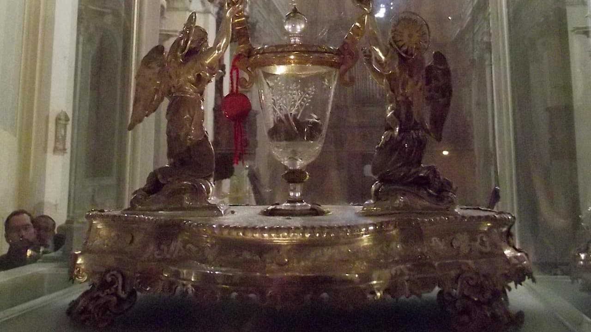
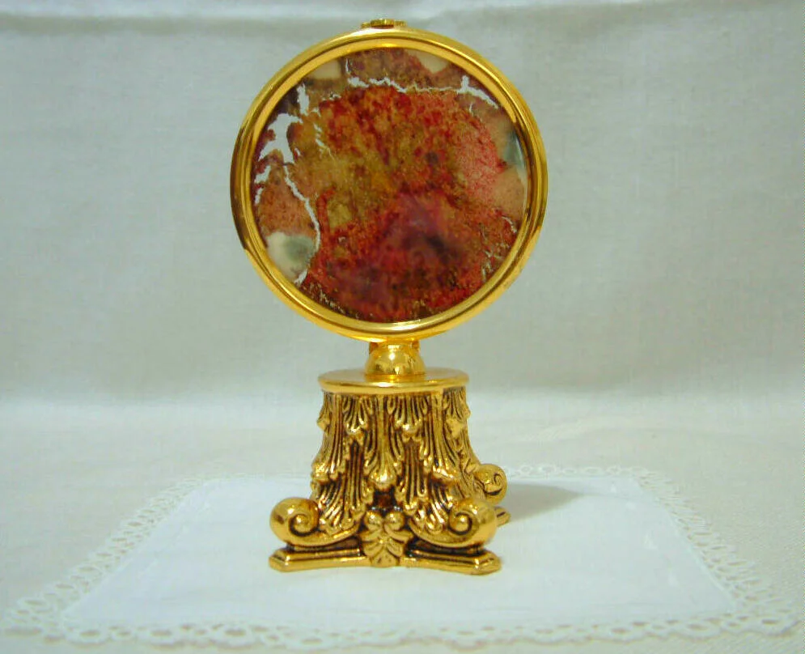
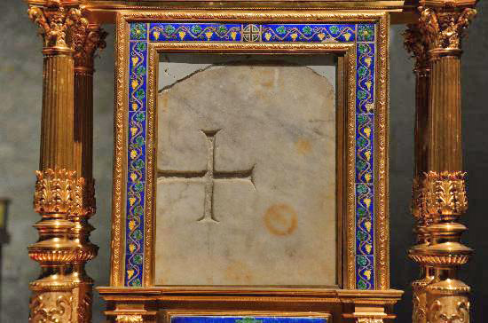
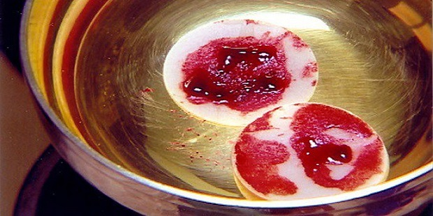

Registro de Milagres
| Milagres | Acontecimento | |
| Milagre de Lanciano | (Itália, c. 750): O milagre de Lanciano foi considerado o maior, que já se ocorreu, quando um monge duvidou da presença real de Jesus. A hóstia transformou-se em carne e o vinho em sangue, que permanecem preservados até hoje, sendo o sangue tipo AB e a carne, tecido do coração. |  |
| Milagre de Buenos Aires | (Argentina, 1996): Uma hóstia consagrada encontrada caida no chão e suja foi colocada e guardada em um copo d'água e, dias depois, transformou-se em sangue e em tecidos humanos. Estudos realizados anos depois confirmaram que a amostra continha glóbulos brancos e tecido cardíaco vivo, com o mesmo tipo sanguíneo (AB) de Lanciano e do Santo Sudário. |  |
| Milagre de Bolsena-Orvieto | (Itália, 1263): Um padre boêmio, com dúvidas de fé, viu sangue pingar da hóstia sobre o corporal durante a consagração na cripta de Santa Cristina.O linho manchado foi levado a Orvieto, motivando o Papa Urbano IV a instituir a festa de Corpus Christi. |  |
| Milagre de Legnica | (Polônia, 2013): O Milagre de Legnica, ocorrido na Polônia no Natal de 2013, envolveu uma hóstia consagrada que, durante a distribuição da comunhão, a hóstia caiu no chão, e foi colocada em um recipiente com água, seguindo o protocolo da Igreja.Dias depois desenvolveu manchas vermelhas. Análises forenses indicaram que o tecido encontrado é músculo cardíaco humano em agonia. O fenômeno foi reconhecido como sobrenatural pela Igreja Católica em 2016. |  |
| São João Paulo II: 'A Igreja vive da Eucaristia, Esta verdade não exprime apenas uma experiência diária de fé, mas contém o núcleo do mistério da Igreja'. | ||